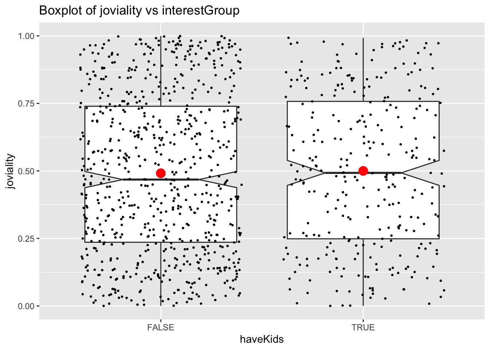

pacman::p_load(tidyverse, DT, patchwork,ggiraph, plotly, ggrepel, ggstatsplot, ggdist, ggplot2, reshape2, forcats, ggridges)Take Home Exercise 1
The Task
In this take-home exercise, you are required to apply the concepts and methods you had learned in Lesson 1-4 to reveal the demographic and financial characteristics of the city of Engagement byusing appropriate static and interactive statistical graphics methods. This exercise requires a user-friendly and interactive solution that helps city managers and planners to explore the complex data in an engaging way and reveal hidden patterns.
The Data
For the purpose of this study, two data sets are provided. They are:
Participants.csv
Contains information about the residents of City of Engagement that have agreed to participate in this study.
participantId (integer): unique ID assigned to each participant.
householdSize (integer): the number of people in the participant’s household
haveKids (boolean): whether there are children living in the participant’s household.
age (integer): participant’s age in years at the start of the study.
educationLevel (string factor): the participant’s education level, one of: {“Low”, “HighSchoolOrCollege”, “Bachelors”, “Graduate”}
interestGroup (char): a char representing the participant’s stated primary interest group, one of {“A”, “B”, “C”, “D”, “E”, “F”, “G”, “H”, “I”, “J”}. Note: specific topics of interest have been redacted to avoid bias.
joviality (float): a value ranging from [0,1] indicating the participant’s overall happiness level at the start of the study.
FinancialJournal.csv
Contains information about financial transactions.
participantId (integer): unique ID corresponding to the participant affected
timestamp (datetime): the time when the check-in was logged
category (string factor): a string describing the expense category, one of {“Education”, “Food”, “Recreation”, “RentAdjustment”, “Shelter”, “Wage”}
amount (double): the amount of the transaction
Data Preparation
Installing and loading the required libraries
Importing Data
participants_data <- read_csv("data/participants.csv")
financial_data <- read_csv("data/FinancialJournal.csv")Preparing Data
Take a look at participants data
glimpse(participants_data)Rows: 1,011
Columns: 7
$ participantId <dbl> 0, 1, 2, 3, 4, 5, 6, 7, 8, 9, 10, 11, 12, 13, 14, 15, 1…
$ householdSize <dbl> 3, 3, 3, 3, 3, 3, 3, 3, 3, 3, 3, 3, 3, 3, 3, 3, 3, 3, 3…
$ haveKids <lgl> TRUE, TRUE, TRUE, TRUE, TRUE, TRUE, TRUE, TRUE, TRUE, T…
$ age <dbl> 36, 25, 35, 21, 43, 32, 26, 27, 20, 35, 48, 27, 34, 18,…
$ educationLevel <chr> "HighSchoolOrCollege", "HighSchoolOrCollege", "HighScho…
$ interestGroup <chr> "H", "B", "A", "I", "H", "D", "I", "A", "G", "D", "D", …
$ joviality <dbl> 0.001626703, 0.328086500, 0.393469590, 0.138063446, 0.8…Turn education level into ordinal variables
participants_data$educationLevel <- factor(participants_data$educationLevel, levels = c("Low", "HighSchoolOrCollege", "Bachelors", "Graduate"))Final participants_data df
glimpse(participants_data)Rows: 1,011
Columns: 7
$ participantId <dbl> 0, 1, 2, 3, 4, 5, 6, 7, 8, 9, 10, 11, 12, 13, 14, 15, 1…
$ householdSize <dbl> 3, 3, 3, 3, 3, 3, 3, 3, 3, 3, 3, 3, 3, 3, 3, 3, 3, 3, 3…
$ haveKids <lgl> TRUE, TRUE, TRUE, TRUE, TRUE, TRUE, TRUE, TRUE, TRUE, T…
$ age <dbl> 36, 25, 35, 21, 43, 32, 26, 27, 20, 35, 48, 27, 34, 18,…
$ educationLevel <fct> HighSchoolOrCollege, HighSchoolOrCollege, HighSchoolOrC…
$ interestGroup <chr> "H", "B", "A", "I", "H", "D", "I", "A", "G", "D", "D", …
$ joviality <dbl> 0.001626703, 0.328086500, 0.393469590, 0.138063446, 0.8…Take a look at financial_data
glimpse(financial_data)Rows: 1,513,636
Columns: 4
$ participantId <dbl> 0, 0, 0, 1, 1, 1, 2, 2, 2, 3, 3, 3, 4, 4, 4, 5, 5, 5, 6,…
$ timestamp <dttm> 2022-03-01, 2022-03-01, 2022-03-01, 2022-03-01, 2022-03…
$ category <chr> "Wage", "Shelter", "Education", "Wage", "Shelter", "Educ…
$ amount <dbl> 2472.50756, -554.98862, -38.00538, 2046.56221, -554.9886…Format timestamp into year-month-date Add additional column year-month
financial_data$timestamp <- format(as.Date(financial_data$timestamp), "%Y-%m-%d")
financial_data$yearmonth <- format(as.Date(financial_data$timestamp), "%Y-%m")Final financial_data df
glimpse(financial_data)Rows: 1,513,636
Columns: 5
$ participantId <dbl> 0, 0, 0, 1, 1, 1, 2, 2, 2, 3, 3, 3, 4, 4, 4, 5, 5, 5, 6,…
$ timestamp <chr> "2022-03-01", "2022-03-01", "2022-03-01", "2022-03-01", …
$ category <chr> "Wage", "Shelter", "Education", "Wage", "Shelter", "Educ…
$ amount <dbl> 2472.50756, -554.98862, -38.00538, 2046.56221, -554.9886…
$ yearmonth <chr> "2022-03", "2022-03", "2022-03", "2022-03", "2022-03", "…Data Visualization
Participants Data
Understanding the variables
Distribution of joviality
Below is the density plot of joviality with mean and median. Mean and median close to each other and they are both slightly lower than 0.5 which means that people are ‘averagely happy’ in this town. There are fewer people who are extremly unhappy or happy but the distribution does not follow normal distribution.
ggplot(data=participants_data, aes(joviality)) +
geom_density(fill = "lightblue", color = "black") +
labs(title = "Density plot of joviality", x = "joviality", y ="density") +
geom_vline(aes(xintercept = mean(joviality)), color = "red", linetype = "dashed", size = 1) +
geom_vline(aes(xintercept = median(joviality)), color = "blue", linetype = "dashed", size = 1) +
annotate("text", x = mean(participants_data$joviality), y = 1, label = paste("Mean =", round(mean(participants_data$joviality), 2)), color = "red", vjust = -2) +
annotate("text", x = median(participants_data$joviality), y = 1, label = paste("Median =", round(median(participants_data$joviality), 2)), color = "blue", vjust = -0.5) +
theme_minimal()set.seed(123)
gghistostats(
data = participants_data,
x = joviality,
type = "bayes",
test.value = 0.5,
xlab = "joviality"
)Distribution of Age
From distribution of age for the participants we can see that there’s a large number of young adults at around 30 years old and a relatively smaller proportion of people who are below 20 years old. Other than that, the distribution is not extremely skewed.
ggplot(data=participants_data,
aes(x= age)) +
geom_histogram(bins=20,
color="black",
fill="light blue") +
ggtitle("Distribution of age")Distribution of Household Size
Interestingly the max household size is 3. Not sure if this is the case or a limitation of the survey. The distribution of household size is relatively uniform.
ggplot(data=participants_data,
aes(x = householdSize)) +
geom_bar(fill="light blue") +
ggtitle("Distribution of householdSize")Distribution of havingKids
This variable correlates strongly with householdSize. Number of people with householdSize = 3 equals that of havingKids = True.
ggplot(data=participants_data,
aes(x = haveKids)) +
geom_bar(fill="light blue") +
ggtitle("Distribution of haveKids")Distribution of educationLevel
More than half of the participants have educationLevel of High School or College. Low educationLevel has the lowest percentage.
ggplot(data=participants_data,
aes(x = educationLevel)) +
geom_bar(fill="light blue") +
ggtitle("Distribution of educationLevel")Distribution of interestGroup
Each interest group seem to have relatively similar number of participants. None with significantly higher or lower number of people.
ggplot(data=participants_data,
aes(x = interestGroup)) +
geom_bar(fill="light blue") +
ggtitle("Distribution of interestGroup")Understanding Correlation between joviality and other variables
joviality vs haveKids
Having kids or not does not seem to influence people’s joviality. Median of people with kids are slightly higher than those without kids and the mean is very close for the two groups.
ggplot(data=participants_data,
aes(y = joviality,
x= haveKids)) +
geom_boxplot(notch=TRUE) +
geom_point(position="jitter",
size = 0.5) +
stat_summary(geom = "point",
fun.y="mean",
colour ="red",
size=4) +
ggtitle("Boxplot of joviality vs interestGroup")
ggbetweenstats(
data = participants_data,
x = haveKids,
y = joviality,
type = "np",
messages = FALSE
)joviality vs educationLevel
educationLevel also does not seem to correlate to joviality. There is a slight increasing trend of mean of joviality with higher education level but the increase is not significant (0.49 to 0.52). But those with low educationLevel has the highest variance in terms of joviality.
tooltip <- function(y, ymax, accuracy = .01) {
mean <- scales::number(y, accuracy = accuracy)
sem <- scales::number(ymax - y, accuracy = accuracy)
paste("Mean joviality:", mean, "+/-", sem)
}
gg_point <- ggplot(data=participants_data,
aes(x = educationLevel),
) +
stat_summary(aes(y = joviality,
tooltip = after_stat(
tooltip(y, ymax))),
fun.data = "mean_se",
geom = GeomInteractiveCol,
fill = "light blue"
) +
stat_summary(aes(y = joviality),
fun.data = mean_se,
geom = "errorbar", width = 0.2, size = 0.2
) +
ggtitle("Bar chart of joviality vs educationLevel")
girafe(ggobj = gg_point,
width_svg = 8,
height_svg = 8*0.618)ggbetweenstats(
data = participants_data,
x = educationLevel,
y = joviality,
type = "p",
mean.ci = TRUE,
pairwise.comparisons = TRUE,
pairwise.display = "s",
p.adjust.method = "fdr",
messages = FALSE
)joviality vs age
There seem to be no significant correlation between joviality and age.
ggplot(data=participants_data,
aes(x= age,
y=joviality)) +
geom_point() +
geom_smooth(method=lm,
size=0.5) +
geom_label_repel(aes(label = participantId),
fontface = "bold") +
ggtitle("Scatter plot for joviality vs age")joviality vs interestGroup
There doesn’t seem to be significant difference in interest groups and their participants joviality.
ggplot(participants_data,
aes(x = joviality,
y = interestGroup)) +
geom_density_ridges(
scale = 3,
rel_min_height = 0.01,
bandwidth = 3.4,
fill = "#7097BB",
color = "white"
) +
scale_x_continuous(
name = "interestGroup",
expand = c(0, 0)
) +
scale_y_discrete(name = NULL) +
ggtitle("Ridge plot of joviality vs interestGroup") +
theme_ridges()Financial Data
Aggregate data base on participantId.
aggregated_data <- financial_data %>%
group_by(participantId, category) %>%
summarise(total_amount = sum(amount))pivoted_data <- aggregated_data %>%
pivot_wider(names_from = category, values_from = total_amount, values_fill = 0)glimpse(pivoted_data)Rows: 1,011
Columns: 7
Groups: participantId [1,011]
$ participantId <dbl> 0, 1, 2, 3, 4, 5, 6, 7, 8, 9, 10, 11, 12, 13, 14, 15, 1…
$ Education <dbl> -494.0699, -494.0699, -166.5618, -494.0699, -166.5618, …
$ Food <dbl> -3141.976, -3167.336, -3467.314, -3395.537, -3262.336, …
$ Recreation <dbl> -4384.067, -6637.511, -4172.006, -4704.288, -6315.910, …
$ Shelter <dbl> -7214.852, -7214.852, -7235.188, -7214.852, -18410.462,…
$ Wage <dbl> 109816.59, 96374.93, 85107.52, 82269.33, 106055.17, 232…
$ RentAdjustment <dbl> 0.000, 0.000, 0.000, 0.000, 4809.283, 0.000, 0.000, 0.0…Merge participants_data and financial data.
merged_data <- left_join(participants_data, pivoted_data, by = "participantId")Create new variables.
merged_data <- merged_data %>%
mutate(totalSpending = Education + Food + Recreation + Shelter - RentAdjustment)merged_data <- merged_data %>%
mutate(netValue = Wage + totalSpending)glimpse(merged_data)Rows: 1,011
Columns: 15
$ participantId <dbl> 0, 1, 2, 3, 4, 5, 6, 7, 8, 9, 10, 11, 12, 13, 14, 15, 1…
$ householdSize <dbl> 3, 3, 3, 3, 3, 3, 3, 3, 3, 3, 3, 3, 3, 3, 3, 3, 3, 3, 3…
$ haveKids <lgl> TRUE, TRUE, TRUE, TRUE, TRUE, TRUE, TRUE, TRUE, TRUE, T…
$ age <dbl> 36, 25, 35, 21, 43, 32, 26, 27, 20, 35, 48, 27, 34, 18,…
$ educationLevel <fct> HighSchoolOrCollege, HighSchoolOrCollege, HighSchoolOrC…
$ interestGroup <chr> "H", "B", "A", "I", "H", "D", "I", "A", "G", "D", "D", …
$ joviality <dbl> 0.001626703, 0.328086500, 0.393469590, 0.138063446, 0.8…
$ Education <dbl> -494.0699, -494.0699, -166.5618, -494.0699, -166.5618, …
$ Food <dbl> -3141.976, -3167.336, -3467.314, -3395.537, -3262.336, …
$ Recreation <dbl> -4384.067, -6637.511, -4172.006, -4704.288, -6315.910, …
$ Shelter <dbl> -7214.852, -7214.852, -7235.188, -7214.852, -18410.462,…
$ Wage <dbl> 109816.59, 96374.93, 85107.52, 82269.33, 106055.17, 232…
$ RentAdjustment <dbl> 0.000, 0.000, 0.000, 0.000, 4809.283, 0.000, 0.000, 0.0…
$ totalSpending <dbl> -15234.97, -17513.77, -15041.07, -15808.75, -32964.55, …
$ netValue <dbl> 94581.623, 78861.160, 70066.451, 66460.587, 73090.617, …Understanding joviality vs financial data
joviality vs netValue
Unexpectedly, there seem to be a negative correlation between netValue and joviality. People with more money left over at the end of each month seem to be less happy.
ggplot(data=merged_data,
aes(x= netValue,
y=joviality)) +
geom_point() +
geom_smooth(method=lm,
size=0.5) +
geom_label_repel(aes(label = participantId),
fontface = "bold") +
ggtitle("Scatter plot of joviality vs netValue")joviality vs each spending category
The heatmap shows that Education has negative correlation to joviality. Those who spend more money on education are less happy than those who spend less. Shelter has almost 0 correlation with joviality. People with higher spending on shelter are not happier compared to the rest. Food and recreation have positive correlation to joviality and recreation has a stronger correlation. This makes sense as more money spent on food and recreation brings relaxation and happiness.
new_merged_data_neg <- abs(select(merged_data, joviality, Education, Food, Recreation, Shelter, totalSpending))
cor_matrix <- cor(as.matrix(new_merged_data_neg[,1]),as.matrix(new_merged_data_neg[,-1]))
ggplot(data = melt(cor_matrix), aes(x = Var1, y = Var2, fill = value)) +
geom_tile(color = "white") +
scale_fill_gradient2(low = "lightblue", mid = "white", high = "orange", midpoint = 0) +
labs(title = "Correlation Matrix Heatmap - Spending Category", x = "Variable", y = "Variables") +
geom_text(aes(label = round(value,2))) +
theme_minimal()joviality vs each incoming category
RentAdjustment is positively correlated to joviality. This could perhaps be explained as people would feel that they are supported by the government with rent adjustment which makes them happier. Interestingly, wage is negatively correlated to joviality. Those with higher wage are less happy.
new_merged_data_pos <- select(merged_data, joviality, Wage, RentAdjustment)
cor_matrix <- cor(as.matrix(new_merged_data_pos[,1]),as.matrix(new_merged_data_pos[,-1]))
# Plot correlation heatmap
ggplot(data = melt(cor_matrix), aes(x = Var1, y = Var2, fill = value)) +
geom_tile(color = "white") +
scale_fill_gradient2(low = "lightblue", mid = "white", high = "orange", midpoint = 0) +
labs(title = "Correlation Matrix Heatmap - Incoming category", x = "Variable", y = "Variable") +
geom_text(aes(label = round(value,2))) +
theme_minimal()